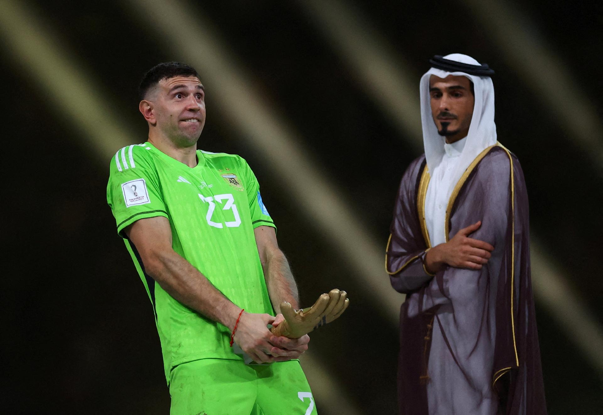

Noticia de Hoje
Sete novas regras entram em vigor no futebol
A International Football Association Board (IFAB) colocou em vigor, a partir deste mês de julho, mudanças em sete regras do futebol

As provocações de Emiliano Martínez, goleiro da Argentina, durante as disputas de pênaltis na Copa do Mundo fizeram a IFAB debater e alterar a regra sobre o comportamento destes jogadores. A nova medida prevê que os goleiros devem ficar em cima da linha, frente à frente com o cobrador, sem agir de uma maneira que desconcentre ou distraia o adversário, bem como atrase a batida. Também não é permitido que esses atletas toquem nas traves ou na rede
Confira a noticia completa aqui.
Noticia de Hoje
Torcedores invadem motel e agridem Luan, do Corinthians
A Agressão aconteceu durante a madrugada, na Barra Funda, zona oeste de São Paulo. Clube acionou a polícia e colocou o departamento jurídico à disposição
Segundo informações obtidas pelo ge, torcedores do Timão se dirigiram ao local, na Barra Funda, zona oeste da capital paulista, e conseguiram encontrar o jogador.De acordo com relatos ouvidos pela reportagem, Luan sofreu agressões na região das costelas, mas está bem. O jogador estava acompanhado de cerca de cinco amigos e quatro mulheres.O delegado Cesar Saad, da Delegacia de Repressão aos Delitos Esporte, disse que o presidente do Corinthians, Duilio Monteiro Alves, entrou em contato com ele.
- Fui procurado pelo presidente Duilio e estou averiguando o caso. O Corinthians não conseguiu falar com o jogador nem o representante dele, mas já colocou o departamento jurídico em alerta para tratar desse tema - afirmou Saad.
O ge procurou o motel Caribe, mas os funcionários disseram que não podem dar informações sobre o caso.
GE Corinthians repercute a entrevista de Luan
Luan em baixa
A agressão ao jogador acontece justamente após ele fazer um balanço de sua passagem pelo Corinthians desde 2020. O meia voltou a pedir oportunidades no início deste ano, desta vez para Vanderlei Luxemburgo. No último domingo, o técnico disse que não utiliza o jogador porque a torcida não quer.
Luan tem contrato com o Timão até o fim desta temporada. Ele não joga pelo clube desde fevereiro do ano passado. No total, foram 80 jogos, 11 gols e cinco assistências pelo Timão.
O meia foi contratado em 2020 a um custo de R$ 28,9 milhões. De acordo com o balanço financeiro de 2022, o Corinthians fechou o ano passado devendo R$ 4,5 milhões ao jogador em direitos de imagem.
Confira a noticia completa aqui.